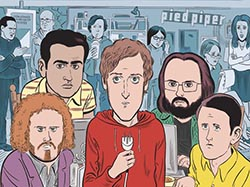

Le début de l’aventure pour Richard Hendricks dans la Silicon Valley .
Dans cette saison on va suivre les débuts de Pied Piper, et le début des péripéties de nos protagonistes
. Saison de 8 épisodes .
Affiche de la saison 1 de Silicon Valley
Richard Hendricks et Nelson Bighetti
Photo du tournage de la saison 1
Saison 2 (2014)
Seconde Saison dans laquelle on retrouve nos programmeurs préférés.
Sorti d’un grand succès, Pied Piper commence donc à devenir une entreprise qui intéresse dans la Valley .
On va continuer dans cette saison à suivre l'ascension, remplit d'obstacle de nos protagonistes. Saison de 10 épisodes .
Affiche de la saison 2 de Silicon Valley
Début da la saison 2, dans un stade
Russ Hanneman, un investisseur de Pied Piper
Saison 3: (2016)
Malheureusement, Richard à été obligé de renoncer à ses fonctions de PDG de sa propre entreprise .
Une fronde va donc s’organiser de la part de tous les amis de Richard et de ce dernier .
Leurs but, reprendre la direction de leur entreprise . Saison de 10 épisodes .
Affiche de la saison 3 de Silicon Valley
Erlich et Big Head, lors d'une fête
Erlich Bachman dans un pub pour Pied Piper
Saison 4: (2017)
Dans cette saison, Richard et ses amis ont réussi à sauver in extremis l’entreprise.
Ils vont donc redoubler d'efforts pour continuer de faire leur chemin dans la Silicon Valley . Saison de 10 épisodes .

Affiche de la saison 4 de Silicon Valley
Erlich et Jian Yang
Dinesh et Gilfoyle, jouant à la PS3
Saison 5: (2018)
Pied Piper s’est fait une place dans le paysage tech de la Valley .
Ils vont donc désormais pouvoir lancer leurs plus gros projet : Piper Net ! Saison de 8 épisodes .
Affiche de la saison 5 de Silicon Valley
Dinesh et Richard, dans la saison 5
Monica et Gilfoyle
Saison 6: (2019)
Ultime saison de la série . Pied Piper et devenu une très grande entreprise de la Silicon Valley .
On va donc suivre dans cette dernière saison les protagonistes qui doivent gérer
une énorme boîte et tout ce que cela implique ... Saison de 7 épisodes.